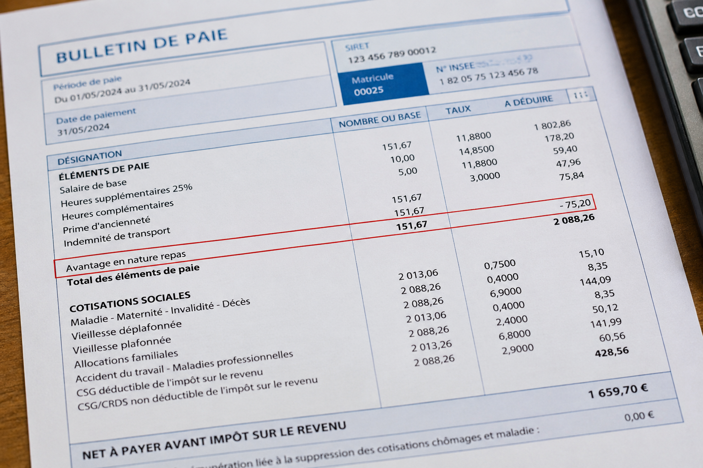

Avantage en nature repas 2026 : montant, calcul en paie et obligations de l'employeur en restauration
En restauration, nourrir ses salariés n'est pas une faveur : c'est une obligation de la convention collective HCR (article 35). L'avantage en nature repas est évalué à 4,25 € par repas en 2026 dans le secteur, soit un coût mensuel de 187 € pour un temps plein nourri deux fois par jour. Ce guide détaille le cadre légal, les montants à jour, le traitement en paie, la différence avec l'indemnité compensatrice nourriture (ICN), les cas particuliers (apprentis, extras, saisonniers) et les risques en cas de non-conformité.
1. Qu'est-ce que l'avantage en nature repas en HCR ?
L'avantage en nature repas est une forme de rémunération non monétaire : l'employeur fournit gratuitement un ou deux repas par jour à son salarié, qui économise ainsi une dépense personnelle. Cet avantage est assimilé à du salaire : il entre dans l'assiette des cotisations sociales et est imposable à l'impôt sur le revenu.
Le cadre légal repose sur plusieurs textes :
- Convention collective HCR (IDCC 1979), article 35 — impose à l'employeur de nourrir ses salariés dans les conditions prévues.
- Arrêté du 28 avril 2003 — instaure un régime dérogatoire pour le secteur HCR : l'évaluation se fait par référence au minimum garanti (MG) et non au barème forfaitaire général.
- Code du travail, articles L3231-12 et D3231-8 à R3231-16 — définissent le minimum garanti et les règles de déduction des avantages en nature.
- BOSS (Bulletin Officiel de la Sécurité Sociale) — précise les barèmes applicables chaque année.
Point essentiel : En HCR, l'évaluation de l'avantage en nature repas est fixée à 1 minimum garanti par repas (4,25 € en 2026), contre 5,50 € dans le régime général. Ce régime dérogatoire est plus favorable pour les employeurs du secteur.
2. Barème 2026 : montants forfaitaires URSSAF
| Évaluation | 2025 | 2026 |
|---|---|---|
| HCR — 1 repas (1 MG) | 4,22 € | 4,25 € |
| HCR — 2 repas (2 MG) | 8,44 € | 8,50 € |
| Régime général — 1 repas | 5,45 € | 5,50 € |
| Régime général — 2 repas | 10,90 € | 11,00 € |
| TVA forfaitaire à reverser / repas | 0,32 € | 0,33 € |
Source : URSSAF / BOSS, barèmes au 1er janvier 2026. Minimum garanti = 4,25 €.
Coût mensuel pour l'employeur
| Repas / jour | Jours travaillés | Montant AN brut | Cotisations patronales (~45 %) | TVA forfaitaire | Coût total employeur |
|---|---|---|---|---|---|
| 1 repas | 22 jours | 93,50 € | ~42 € | 7,26 € | ~143 € |
| 2 repas | 22 jours | 187,00 € | ~84 € | 14,52 € | ~286 € |
Cotisations patronales estimées à 45 % (maladie, vieillesse, chômage, retraite complémentaire). Le coût réel des matières premières du repas n'est pas pris en compte ici.
3. Obligation de nourrir : ce que dit la convention HCR
L'article 35 de la convention collective HCR rend l'avantage repas obligatoire dès que deux conditions cumulatives sont réunies :
- L'établissement est ouvert aux clients pendant les heures de repas.
- Le salarié est présent et travaille pendant ces heures de repas.
Combien de repas par jour ?
| Durée de travail | Repas dus | Montant AN / jour |
|---|---|---|
| 5 heures ou moins | 1 repas | 4,25 € |
| Plus de 5 heures | 2 repas | 8,50 € |
Quand l'avantage n'est PAS dû
- Jours de repos — aucun avantage ni ICN.
- Congés payés — pas d'avantage, mais l'AN est inclus dans la base de calcul de l'indemnité de congés payés (règle du 10e ou du maintien).
- Arrêt maladie — pas d'avantage.
- Jours fériés non travaillés — pas d'avantage.
4. Indemnité compensatrice nourriture (ICN)
L'ICN est versée quand l'employeur ne fournit pas le repas alors que les conditions sont réunies (article 35 HCR). Elle compense l'absence de repas en nature.
| Avantage en nature (repas fourni) | ICN (repas non fourni) | |
|---|---|---|
| Montant 2026 | 4,25 € / repas | 4,25 € / repas |
| Ajouté au brut | Oui | Oui |
| Déduit du net | Oui (le salarié a mangé) | Non (le salarié reçoit l'argent) |
| Soumis à cotisations | Oui (toutes) | Oui (toutes) |
| Impact net à payer | Neutre (ajout + déduction) | Positif (+4,25 € net par repas) |
5. Traitement en paie : exemples chiffrés
Le mécanisme en paie se fait en deux temps : ajout au brut, puis déduction du net.
Exemple 1 : Salarié à temps plein, 2 repas/jour fournis
| Ligne du bulletin | Détail | Montant |
|---|---|---|
| Salaire de base | 151,67 h × 12,50 € | 1 895,88 € |
| + Avantage en nature repas | 22 jours × 2 repas × 4,25 € | + 187,00 € |
| = Salaire brut total | 2 082,88 € | |
| − Cotisations salariales (~22 %) | Calculées sur 2 082,88 € | − 458,23 € |
| = Net avant déduction AN | 1 624,65 € | |
| − Déduction avantage en nature | Repas déjà consommés | − 187,00 € |
| = Net à payer | 1 437,65 € |
Exemple 2 : Même salarié, repas non fournis (ICN)
| Ligne du bulletin | Détail | Montant |
|---|---|---|
| Salaire de base | 151,67 h × 12,50 € | 1 895,88 € |
| + ICN | 22 jours × 2 repas × 4,25 € | + 187,00 € |
| = Salaire brut total | 2 082,88 € | |
| − Cotisations salariales (~22 %) | Calculées sur 2 082,88 € | − 458,23 € |
| = Net à payer | Pas de déduction (repas non fourni) | 1 624,65 € |
Différence de net à payer : Le salarié nourri perçoit 1 437,65 € en virement mais a bénéficié de 44 repas (valeur 187 €). Le salarié non nourri perçoit 1 624,65 € en virement et doit se nourrir lui-même. Dans les deux cas, le brut total et les cotisations sont identiques.
6. Régime fiscal : salarié et employeur
Pour le salarié
L'avantage en nature repas (et l'ICN) est imposable à l'impôt sur le revenu. Il augmente le net imposable déclaré via la DSN. Le salarié nourri deux fois par jour voit son net imposable augmenter de 187 €/mois, soit environ 2 244 €/an. Impact fiscal réel : variable selon la tranche marginale (de 0 à ~672 €/an pour un salarié à 30 %).
Pour l'employeur
- Matières premières du repas du personnel : déductibles du résultat imposable comme charge d'exploitation.
- Cotisations patronales calculées sur l'avantage : également déductibles.
- TVA forfaitaire (0,33 €/repas) : à reverser, mais compensée par la TVA déduite sur les achats.

7. Cas particuliers : apprentis, extras, saisonniers, temps partiel
| Statut | Droit au repas | Évaluation AN 2026 | ICN si non fourni |
|---|---|---|---|
| CDI / CDD temps plein | 1 ou 2 repas selon durée | 4,25 € / repas | 4,25 € / repas |
| Temps partiel | 1 repas si ≤ 5 h, 2 si > 5 h | 4,25 € / repas | 4,25 € / repas |
| Apprenti | Mêmes droits | 3,19 € (75 % de 4,25) | 4,25 € (montant intégral) |
| Stagiaire | Mêmes droits | 4,25 € / repas | 4,25 € / repas |
| Extra | Au prorata des jours travaillés | 4,25 € / repas | 4,25 € / repas |
| Saisonnier | Au prorata de la période d'emploi | 4,25 € / repas | 4,25 € / repas |
Salariés en coupure
Si les heures de travail couvrent la période du repas (même avec une coupure), l'obligation s'applique. Rappel : en HCR, la coupure ne peut dépasser 5 heures et il ne peut y en avoir qu'une par jour. Si la coupure dépasse 2 heures, le salarié doit pouvoir regagner son domicile.
Heures supplémentaires sur le temps du repas
Si le salarié effectue des heures supplémentaires qui couvrent un repas non prévu initialement dans son planning, l'employeur doit fournir le repas ou verser l'ICN.
8. Avantages stratégiques pour l'employeur
Au-delà de l'obligation légale, fournir le repas présente plusieurs avantages concrets pour le restaurateur.
Un coût maîtrisé et avantageux
L'avantage en nature est évalué forfaitairement à 4,25 €, quel que soit le coût réel du repas. En pratique, le coût matière d'un repas du personnel (souvent préparé avec les invendus ou les chutes de production) est généralement inférieur au forfait. Les cotisations patronales ne portent que sur le montant forfaitaire.
Comparaison : repas fourni vs augmentation équivalente
| Option | Valeur pour le salarié | Coût employeur |
|---|---|---|
| Fournir 2 repas/jour (AN) | 187 €/mois (en nature) | ~100 € en matières + 84 € cotis. + 15 € TVA = ~199 € |
| Augmentation brute équivalente | 187 € brut = ~146 € net | 187 € + 84 € cotis. = ~271 € |
Le repas fourni coûte ~27 % de moins qu'une augmentation équivalente, tout en offrant une valeur perçue supérieure au salarié.
Fidélisation et cohésion d'équipe
Dans un secteur où le turnover dépasse 70 % par an, le repas du personnel est un levier de fidélisation concret. Il favorise aussi la cohésion d'équipe et permet au chef de tester des recettes ou de valoriser les matières premières. Investir dans la qualité du repas du personnel est un signal fort envoyé à la brigade.
9. Sanctions en cas de non-respect
Redressement URSSAF
En cas de contrôle, une évaluation erronée (sous-évaluation, absence de déclaration) entraîne un redressement de cotisations sur 3 ans avec majorations de retard. La réintégration dans l'assiette des cotisations peut représenter des montants considérables :
Exemple de redressement : Un restaurant de 10 salariés qui ne déclare pas l'avantage en nature pendant 3 ans : 10 × 187 € × 12 mois × 3 ans × ~45 % de cotisations = environ 30 000 € de redressement, hors majorations.
Contentieux prud'homal
- Le salarié peut réclamer un rattrapage de salaire correspondant aux ICN non versées (prescription : 3 ans).
- Toute différenciation entre salariés dans l'attribution des repas expose à un risque de discrimination.
Travail dissimulé
Dans les cas les plus graves (non-déclaration volontaire et systématique), la situation peut être requalifiée en travail dissimulé (fraude aux cotisations), avec des sanctions pénales aggravées.
10. FAQ — Avantage repas restauration
Quel est le montant de l'avantage en nature repas en HCR en 2026 ?
4,25 € par repas (1 minimum garanti), soit 8,50 € pour 2 repas par jour. Ce montant est spécifique au secteur HCR, inférieur au barème général URSSAF de 5,50 €.
L'employeur est-il obligé de nourrir ses salariés en restauration ?
Oui, si l'établissement est ouvert aux clients pendant les heures de repas et que le salarié est présent. Sinon, il doit verser une indemnité compensatrice nourriture (ICN) de 4,25 € par repas.
Comment l'avantage en nature repas apparaît-il sur le bulletin de paie ?
Double mouvement : ajouté au brut (pour cotisations), puis déduit du net à payer (le salarié a déjà consommé le repas). Pour 44 repas/mois : +187 € au brut, −187 € au net.
Quelle est la différence entre avantage en nature et ICN ?
L'avantage en nature s'applique quand le repas est fourni : ajouté au brut puis déduit du net (neutre sur le virement). L'ICN s'applique quand le repas n'est pas fourni : ajoutée au brut et versée en net (le salarié reçoit l'argent).
Les apprentis bénéficient-ils de l'avantage repas ?
Oui, mais l'évaluation est réduite à 75 % : 3,19 € par repas en 2026. Attention : si l'employeur verse une ICN au lieu de fournir le repas, il doit verser le montant intégral de 4,25 €.
L'avantage repas est-il dû pendant les congés payés ?
Non. L'avantage n'est dû que lorsque le salarié est présent et travaille. Mais il est inclus dans la base de calcul de l'indemnité de congés payés (règle du 10e ou du maintien).
Quels risques en cas de non-déclaration de l'avantage repas ?
Redressement URSSAF sur 3 ans avec majorations, rattrapage de salaire aux prud'hommes (3 ans), et requalification possible en travail dissimulé dans les cas les plus graves.